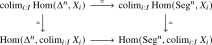
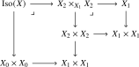
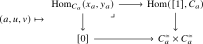

We fix a universe \(\Cat\).
Definition 16.3.1. A functor is said to commute with small filtered colimits if it commutes with colimits of type \(I\) for any filtered category \(I : \Cat^\simeq\).
A full subcategory \(C\) of a category \(D\) is said to be stable under small filtered colimits if the embedding \(C\hookrightarrow D\) commutes with filtered colimits.
Example 16.3.2. The functor \[ \lim_{\pullback}\colon\Fun(\pullback,\An)\to\An\ , \quad (X\to Z\leftarrow Y)\mapsto X\times_Z Y \] commutes with small filtered colimits, since \(\colim_I\) is left exact for every small filtered category \(I\).
Lemma 16.3.3. The full subcategory of synthetic Segal animae is stable under small filtered colimits in \(\PSh(\simp)\).
Proof
For each \(n : \N\), the functor
\[
\PSh(\simp)\to\An\ ,\quad X\mapsto X_n=\Hom(\Delta^n,X)
\]
commutes with colimits (being a left adjoint) hence with small filtered ones.
This implies that the functor
\[
X\mapsto\Hom(\segal{n},X)=\underset{\text{$n$ times}}{\underbrace{X_1\times_{X_0}\cdots\times_{X_0}X_1}}
\]
commutes with small filtered colimits: by induction on \(n\), this amounts to the property
that the formation of pullbacks commutes with small filtered colimits in \(\An\)
(Example 16.3.2).
Given a small filtered category \(I\) and a functor
\[
I\to\PSh(\simp)\ , \quad i\mapsto X_i\, ,
\]
and assuming that each \(X_i\) is a synthetic Segal anima, we obtain for each \(n : \N\)
a commutative square

Lemma 16.3.4. The full subcategory of univalent synthetic Segal animae is stable under small filtered colimits in \(\PSh(\simp)\).
Proof
The diagram of pullback squares

Proposition 16.3.5. The Rezk nerve functor \(N\colon\Cat\to\PSh(\simp)\) commutes with small filtered colimits.
Proof
By Corollaries 15.1.13 and 15.5.5, the nerve identifies \(\Cat\) with the full subcategory of univalent synthetic Segal animae. This subcategory is closed under small filtered colimits by Lemma 16.3.4.
Definition 16.3.6. Let \(C\) be a locally small category with small filtered colimits. An object \(X\) of \(C\) is compact if the functor \[ C\to\An\ , \quad Y\mapsto\Hom_C(X,Y) \] commutes with small filtered colimits.
Example 16.3.7. Let \(A\) be a small category. For any \(a : A^\simeq\), the associated representable presheaf \(h_A(a)=\Hom_A(-,a)\) is compact in \(\PSh(A)\): the functor \[ Y\mapsto\Hom(h_A(a),Y)\simeq Y(a) \] commutes with small colimits, since colimits of presheaves are computed objectwise. Hence it commutes with filtered colimits in particular.
Proposition 16.3.8. If \(C\) is a locally small category with small filtered colimits and pushouts, then the full subcategory of compact objects is stable under pushouts.
Proof
Mapping out of a pushout gives a pullback of hom animae. Since filtered colimits commute with pullbacks in \(\An\), a pushout of compact objects is compact.
Theorem 16.3.9. For any \(n : \N\), the category \([n]\) is a compact object of \(\Cat\).
Proof
The nerve \(N([n])=\Delta^n\) is a representable presheaf, hence compact by Example 16.3.7. Since \(N\) is fully faithful and preserves small filtered colimits (Corollary 15.1.13 and Proposition 16.3.5), \([n]\) is compact in \(\Cat\).
Corollary 16.3.10. The functor \[ \Cat\to\An\ , \quad C\mapsto C^\simeq \] commutes with small filtered colimits.
Proof
The preceding theorem tells us that \([0]\) is compact and \(C^\simeq=\Hom([0],C)\).
Theorem 16.3.11. For any small filtered category \(A\), the functor \[ \colim_A\colon\Fun(A,\Cat)\to\Cat \] is left exact.
Proof
The nerve is fully faithful and preserves limits and small filtered colimits (Corollary 15.1.13 and Proposition 16.3.5). It therefore suffices to prove the assertion in \(\PSh(\simp)\). There, limits and colimits are computed objectwise, so the assertion follows from the left exactness of filtered colimits in \(\An\).
Corollary 16.3.12. Let \(A\) be a small filtered category, and \(C,D\colon A\to\Cat\) two functors. We assume given a natural transformation \(u_a\colon C_a\to D_a\), \(a : A\), such that \(u_a\) is an embedding (a full embedding) for all \(a : A^\simeq\). Then the induced functor \[ \colim_A C\to\colim_A D \] is an embedding (a full embedding, respectively).
Proof
By Theorem 16.3.11, the functor \(\colim_A\) is left exact. Any left exact functor preserves pullback squares of the form hence preserves embeddings. For full embeddings, use the characterization of fully faithful functors in Remark 6.3.2. Its defining square is preserved because \(\colim_A\) is left exact and, by Theorem 16.3.9, the functors \(\Hom_\Cat([1],-)\) and \((-)^\simeq=\Hom_\Cat([0],-)\) commute with filtered colimits.
Remark 16.3.13 (Morphisms in a filtered colimit of categories). Let \(A\) be a small filtered category and \(C\colon A\to\Cat\) a functor. One can understand the colimit of \(C\) as follows. Objects are easy to understand by Corollary 16.3.10: \[ \underset{a : A}{\colim\ } C_a^\simeq = \Big(\underset{a : A}{\colim\ } C_a\Big)^\simeq\, . \] Assume given \(a_0,a_1 : A^\simeq\) and two objects \(x_{a_0} : C_{a_0}^\simeq\) and \(y_{a_1} : C_{a_1}^\simeq\). We will write \(x\) and \(y\) for the object of \(\colim_AC\) obtained as the images of \(x_{a_0}\) and \(y_{a_1}\) through the canonical functors \[ C_{a_0}\to\colim_AC\quad\text{and}\quad C_{a_1}\to\colim_AC \] respectively.
For any map \(u\colon a_0\to a\) in \(A\), we will write \(x_a : C_a^\simeq\) for the image of \(x_{a_0}\) through the functor induced by \(u\). Similarly, for any map \(v\colon a_1\to a\) in \(A\), we will write \(y_a : C_a^\simeq\) for the image of \(y_{a_1}\) through the functor induced by \(v\).
We observe that the projection \(A_{a_0/}\times_A A_{a_1/}\to A\) is terminal (since \(A\) is sifted,
using Proposition 16.2.11). The terms of
\(A_{a_0/}\times_A A_{a_1/}\) literally are of the form \((a,u,v)\) with \(a : A\) together with
\(u\colon a_0\to a\) and \(v\colon a_1\to a\) in \(A\).
In other words, we have an equivalence
\[
\underset{(a,u,v) : A_{a_0/}\times_A A_{a_1/}}{\colim\ } C_a\iso
\underset{a : A}{\colim\ } C_a\, .
\]
The category \(A_{a_0/}\times_A A_{a_1/}\) is filtered as well: it is weakly contractible, and it
is confluent, since the projection to \(A\) is a left fibration, so that we can apply
Proposition 16.2.4. Therefore,
the colimit of the \(A_{a_0/}\times_A A_{a_1/}\)-indexed diagram of cartesian squares
